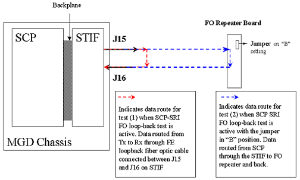

Proprietary to General Electric
Direction 5500113, Rev# 3
Discovery MR750 3.0T Service Methods
Module Version 1.0, Version Date 4/26/07
Proprietary to General Electric |
Diagnostics >> Peripherals >> SRI Data Paths
This diagnostic can be used to test the SRI fiber optic communication path coming out of the MGD chassis.
The SRI module is not tested by this diagnostic.
This test requires an external loopback path between the J15 and J16 fiber optic ports on the STIF board (MGD chassis). There are two ways to do this:
Obtain the fiber optic loopback test cable, part number 46-287282G1, from the RF Cables Kit that is shipped with every system. Remove the existing product cables and install the test cable between J15 and J16 on the STIF Board located in the rear of the MGD Chassis. See comments associated with red dotted path in illustration below. Now run the diagnostic. Remove the test cable and reconnect the product cables when testing is finished.
Test the integrity of the existing product fiber optic cable and the Fiber Optic (FO) Repeater on the Penetration Panel located in the Equipment Room by configuring the FO Repeater to operate in loopback mode. See comments associated with blue dotted path in the illustration below. Put the FO Repeater in loopback mode by placing the jumper on the FO Repeater Board in the 'B' position. Run the diagnostic. Be sure to move the jumper back into the 'A' position when testing is finished. The portion of the fiber optic line in the Magnet Room between the FO Repeater and the SRI (not shown in the illustration) can be checked by referencing the SRI FO Loopback Test procedure in the Troubleshooting section on the Service Methods CEM.
Illustration 1: SRI STIF Loopback Block Diagram

This diagnostic uses the SCP board in the MGD chasis to transmit a sequence of data from its SRI Tx port on the STIF board. The loopback cable you provide should return this data to the Rx port on the STIF board.
Output values are judged pass or fail. In the event of failure, the details of the failure can be found in the GE System Log.
Although, in the case of errors you can click the 1st Error number to see the nature of the error, it is recommended that you view the GE System Log to view all the errors that were recorded.
General fiber optic cable tips:
Verify that the fiber cables are fully seated in their sockets.
Verify that the cable is not kinked or pinched. Sharply bent plastic fibers block the light path.
Inspect the ends of the cables and verify that the plastic light conductors are even with the ends of the gray or blue connectors. The fiber cable may be partially pulled out of the connector leaving a gap in the light's path.
The fiber optic loopback adapter is a short length of single conductor fiber optic cable with a male connector on each end. Many SRI modules have this cable stored inside of there case. If it is missing then a new one can be made from the parts provides in the fiber optic connector repair kit (46-30145061)
Click [Calculate Time] to get an estimate of the time it will take to run the selected diagnostics.
| NOTE: | Other than Test Iterations, the Test Options settings should not be changed from their default settings unless instructed to do so by a GE Healthcare engineer. There are very few circumstances when these settings ever need to be changed. |
SCP Help Page: /csd/mr_csd/serviceDesktop/docs/cclass/scp_board/scp_board.htm
STIF Help Page: /csd/mr_csd/serviceDesktop/docs/cclass/stif_board/stif_board.htm